Whether you have 10 minutes or a whole afternoon, there is a Christmas paper craft here for every little one. We rounded up 25 of our favorite ideas, all made with simple supplies you probably already have at home. No experience needed, no stress, just good old-fashioned holiday fun with your kids.
What You'll Need
Grab these basics before you start. Most of them work across all 25 projects, so one trip to the supply drawer covers you for the whole list.
- Construction paper or cardstock in holiday colors (red, green, white, gold) for nearly every project.
- Child-safe scissors with rounded tips, one pair per child.
- Glue sticks or white school glue for assembling pieces.
- Crayons or washable markers for decorating and adding details.
- Optional extras: googly eyes, ribbon, glitter glue, pom-poms, sticker sheets.
25 Christmas Paper Craft Ideas
1. Paper Christmas Tree
Stack three green triangles in graduated sizes, glue them onto a brown rectangle trunk, and let your child decorate with marker "ornaments" and a star on top. This is one of those easy Christmas paper crafts for kids that looks impressive with almost no prep from you. Pre-cut the triangles for toddlers so they can jump straight to the fun part.
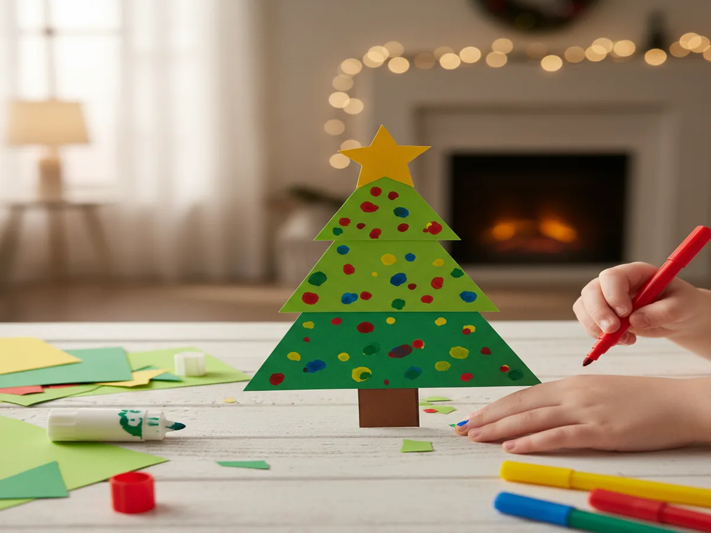
2. Paper Chain Garland
Cut strips of red and green construction paper, loop them into rings, and glue the ends together to form a classic holiday chain. Kids can make these in minutes, and the results look beautiful draped across a mantel or around the tree. Even two-year-olds can do the looping with a little help connecting the ends.
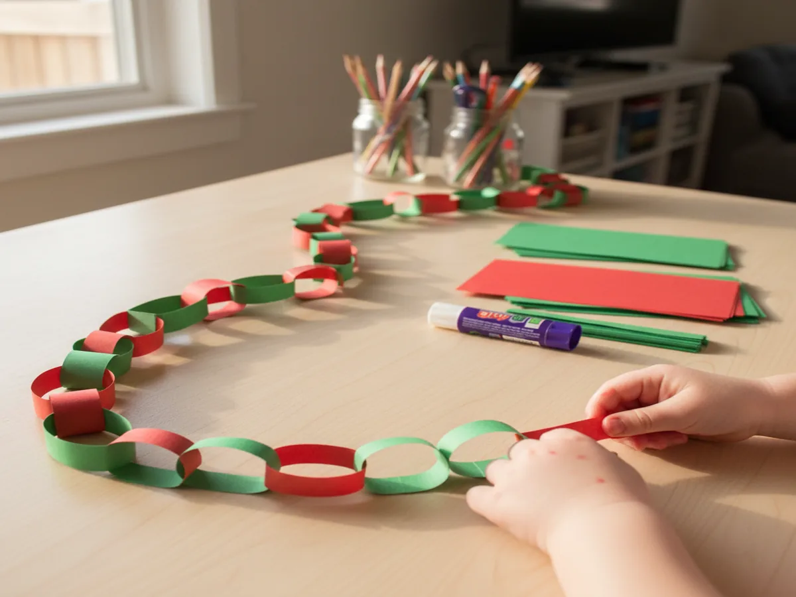
3. Paper Snowflake
Fold a square of white paper in half, then in thirds, and snip small triangles and notches along the folded edges. Open it up to reveal a totally unique snowflake every single time. Older kids love experimenting with different cuts to see what surprising shapes appear.
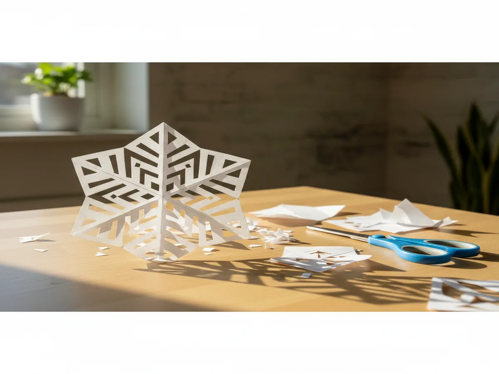
4. Paper Plate Wreath
Cut the center out of a paper plate to create a ring, then let your child tear or cut green construction paper into pieces and glue them all over it. Add red pom-pom berries and tie a ribbon bow at the top. Christmas paper crafts for toddlers don't get simpler than this one, and tearing paper feels wonderfully satisfying for little hands.
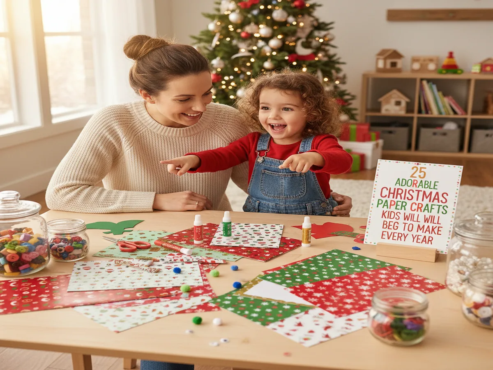
5. Handprint Reindeer Card
Trace your child's hand on brown construction paper, cut it out, and flip it upside down so the fingers become antlers. Glue on two googly eyes and a red circle nose, then attach it to a folded card. Write a sweet message inside and it becomes the most adorable keepsake card Grandma has ever received.
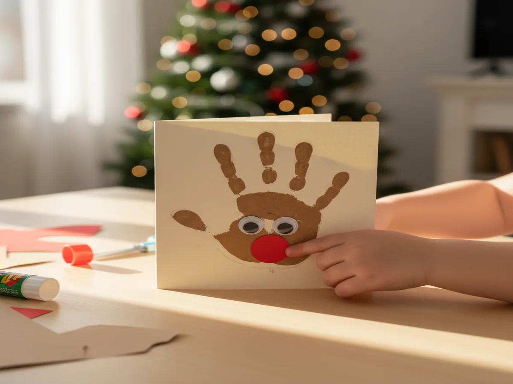
6. Paper Santa Claus
Start with a large red triangle for Santa's body and a flesh-toned circle for his face. Add a white cotton ball beard, a strip of black paper for the belt, and a small red hat. Kids love making these on a big scale to tape to the front door as a holiday welcome for visitors.
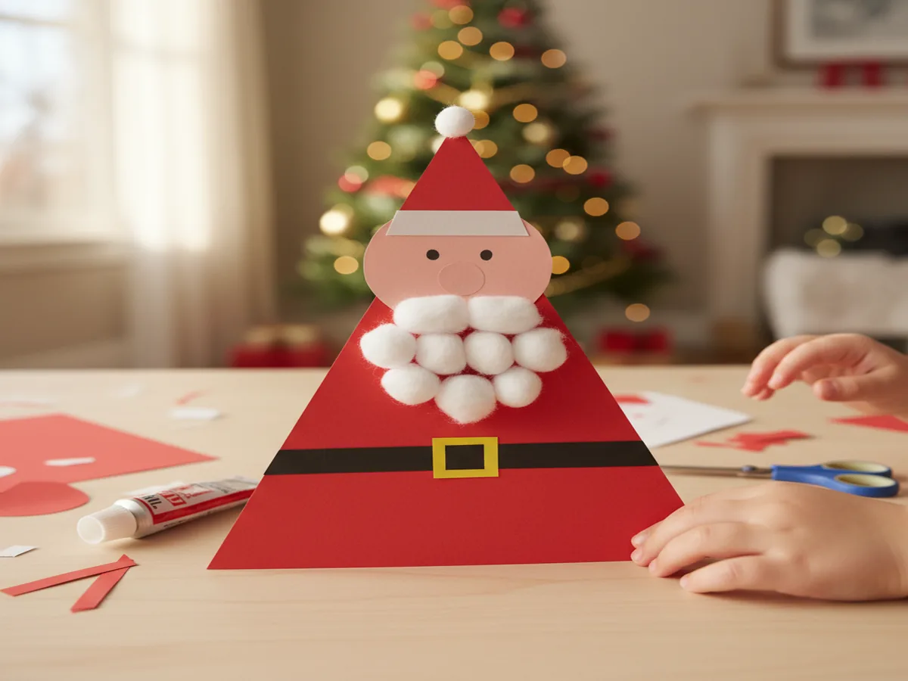
7. Cone Christmas Tree
Roll a sheet of green cardstock into a cone and secure it with tape. Dot the outside with glue and press on sequins, tiny pom-poms, or paper circle ornaments. These little trees look gorgeous lined up on a windowsill or used as a festive centerpiece at the holiday dinner table.
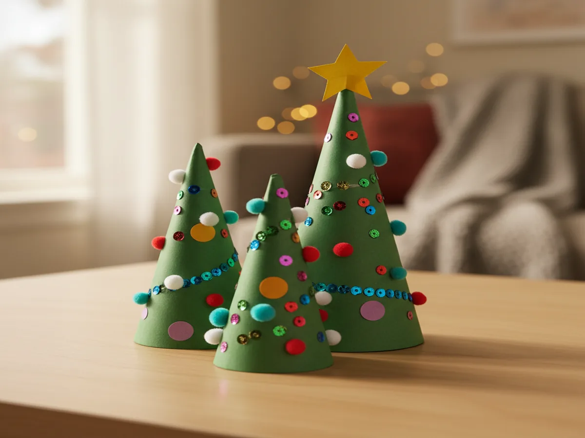
8. Paper Ornament
Cut a circle from cardstock and let your child fill it with stripes, polka dots, sticker gems, or drawn snowflakes. Punch a hole at the top, thread a ribbon loop through, and hang it on the tree. Making a set of handmade paper ornaments each year is the sweetest way to build a collection that tells your family's story.
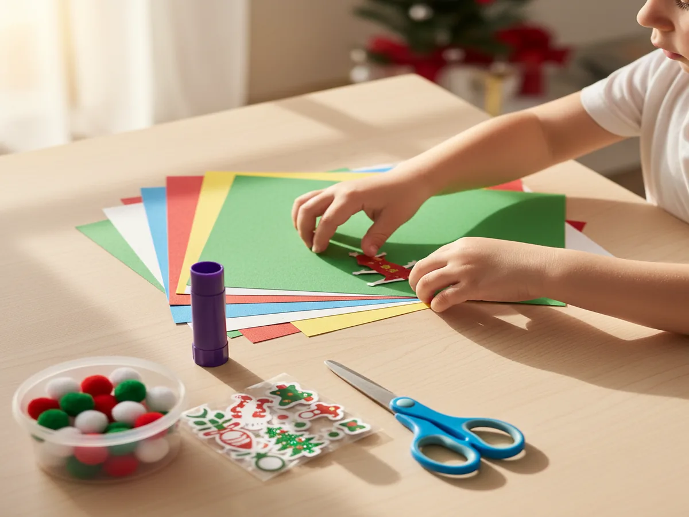
9. Paper Roll Santa
Transform a toilet paper roll into Santa by wrapping it in red paper and adding a white cotton beard, a tiny hat, and a drawn-on face. Kids can make a whole collection of holiday characters using the same roll base, including elves and reindeer. This is a great way to reuse materials you already have.
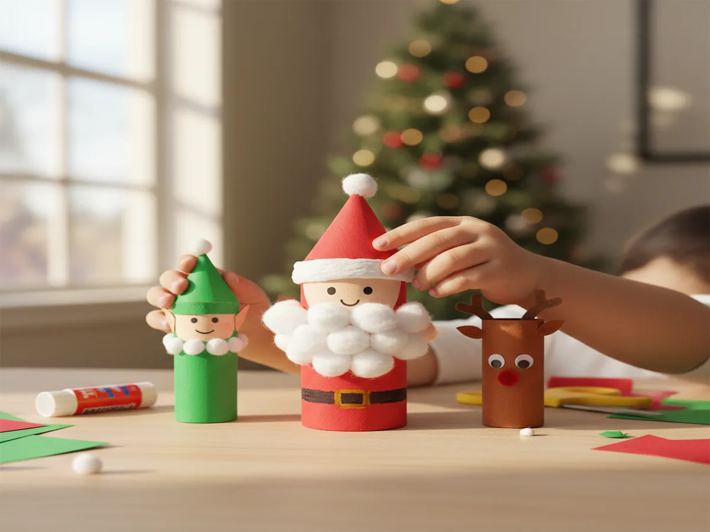
10. Paper Snowman
Stack three white circles in graduating sizes and glue them together. Add a construction paper hat, an orange carrot nose, and tiny black dots for eyes and buttons. Christmas paper crafts for toddlers like this one look polished even when little hands make every single piece slightly lopsided, which is actually what makes them so lovable.
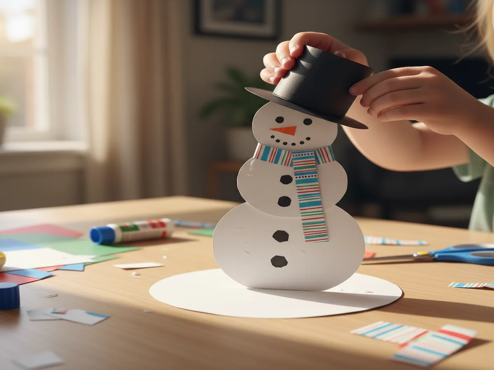
11. Paper Star Garland
Cut star shapes from gold and silver paper, punch a small hole in each one, and thread them onto a long piece of twine. These catch the light beautifully when hung near a window or along a staircase railing. Older kids can cut their own stars while younger ones do the stringing.
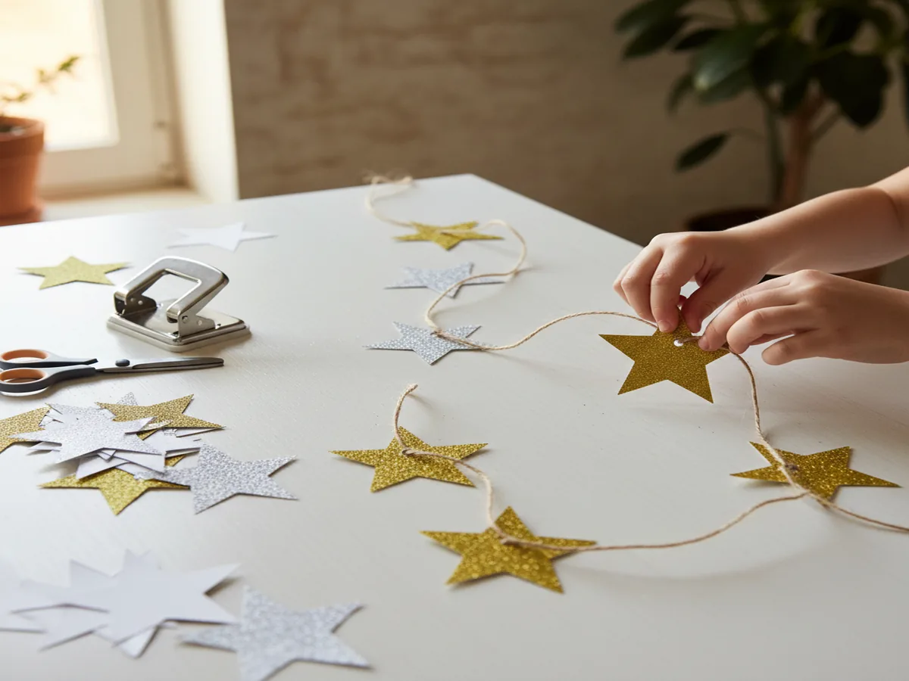
12. Paper Gingerbread Man
Trace a gingerbread man outline onto brown construction paper and cut it out. Decorate with white marker icing, red button dots, and a big grin. These make wonderful tree ornaments with a ribbon loop, or hang a whole paper gingerbread family across the fireplace mantel for a charming holiday display.
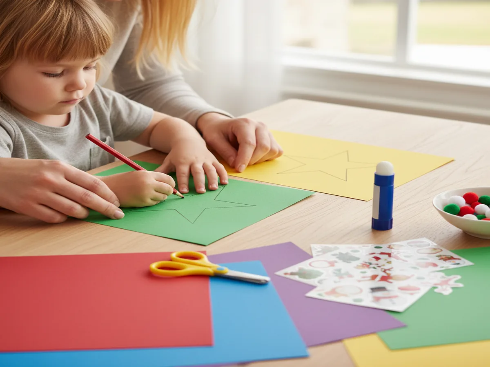
13. Paper Stocking
Fold a sheet of red construction paper in half, draw a stocking outline, and cut through both layers at once to get two matching pieces. Glue the edges together leaving the top open, then let your child decorate the outside. Stuff it with tiny paper notes or small treats for a sweet little surprise.
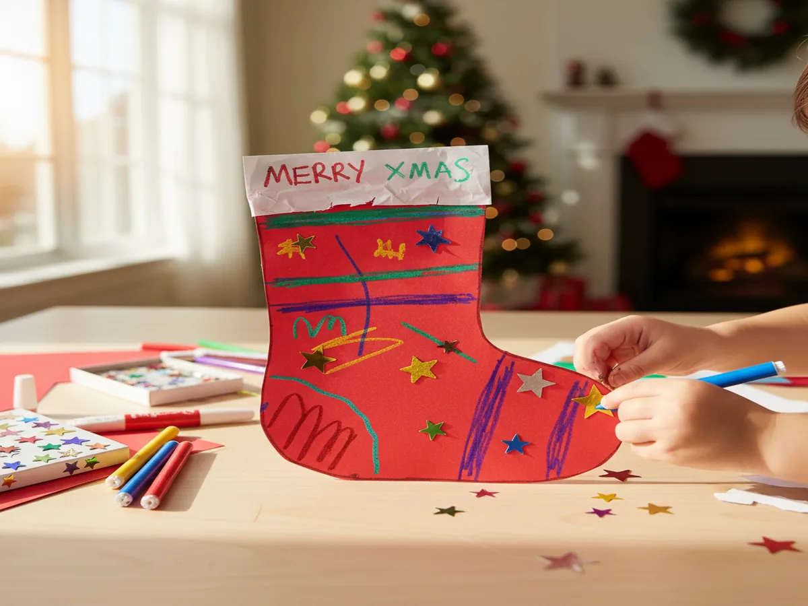
14. Paper Candy Cane
Twist a strip of red paper and a strip of white paper together to create the classic stripe effect, then gently curve one end into a hook shape. Tape the ends to hold everything in place. Make a bunch of these and use them to decorate a small holiday wreath or bundle them together as a festive centerpiece.
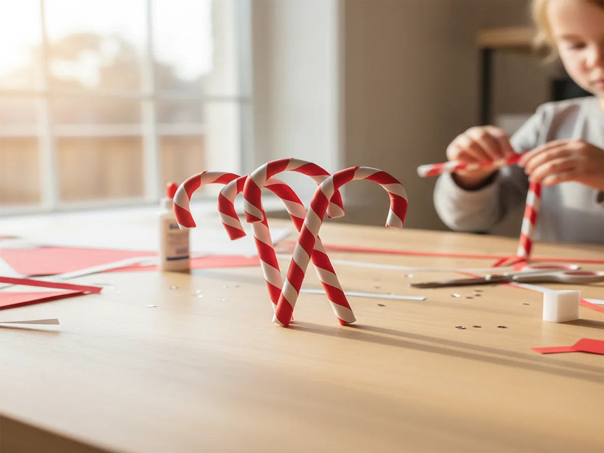
15. Paper Angel
Cut a semicircle from white cardstock and roll it into a cone for the angel's body. Add a small circle head, accordion-fold wings from another strip of paper, and finish with a gold paper halo. These little angels look beautiful displayed on a shelf or perched on top of a cone Christmas tree from idea 7.
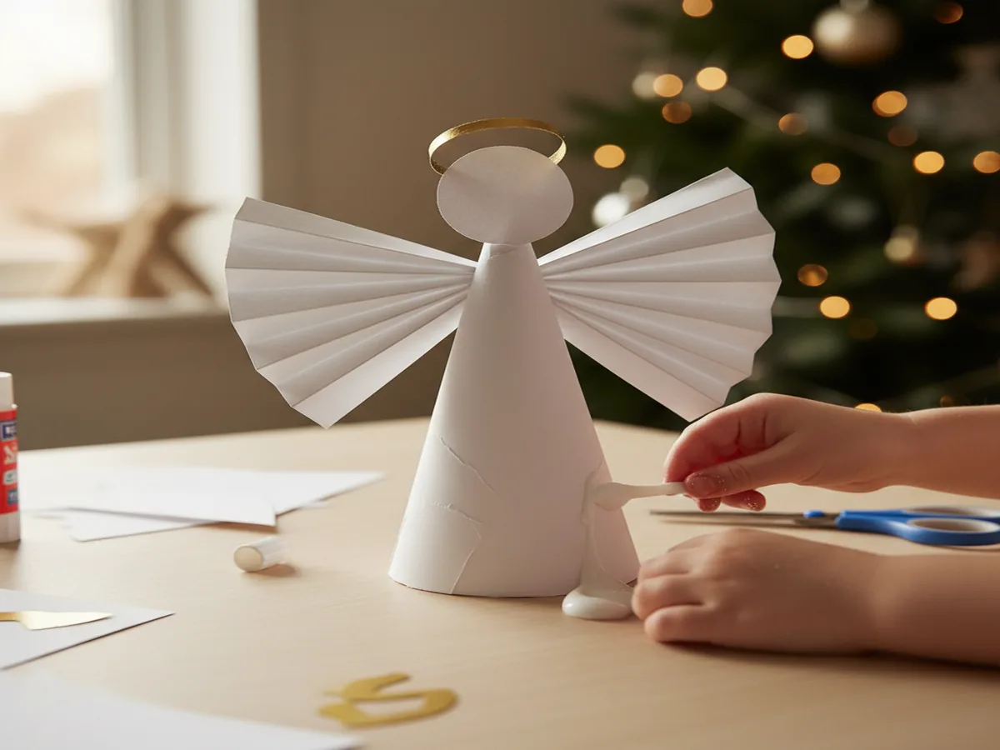
16. Pop-Up Christmas Card
Fold a piece of cardstock in half, make two parallel cuts toward the fold, and push the resulting tab inward to create a pop-up platform. Glue a tiny tree, snowman, or Santa on the tab so it pops out when the card opens. A handmade Christmas card that does a magic trick is one the recipient will genuinely never forget.
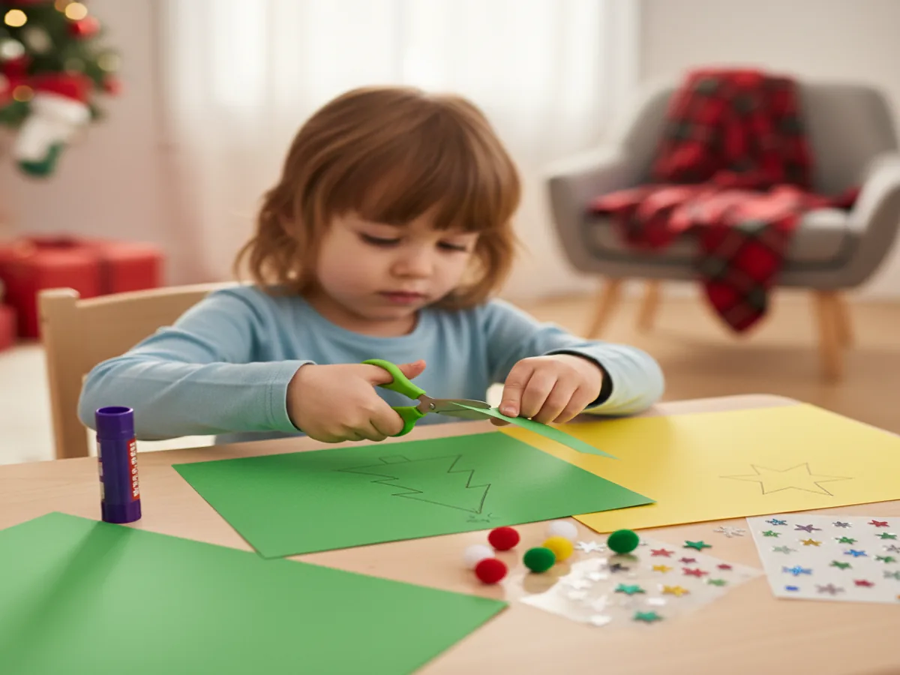
17. Paper Dove
Cut a simple bird silhouette from white paper, accordion-fold a separate strip for the wings, and attach them through a small slit in the bird's body. Hang it from a thread for a peaceful ornament that spins gently in the air. This one is a lovely choice for a quieter, more mindful craft moment with an older child.
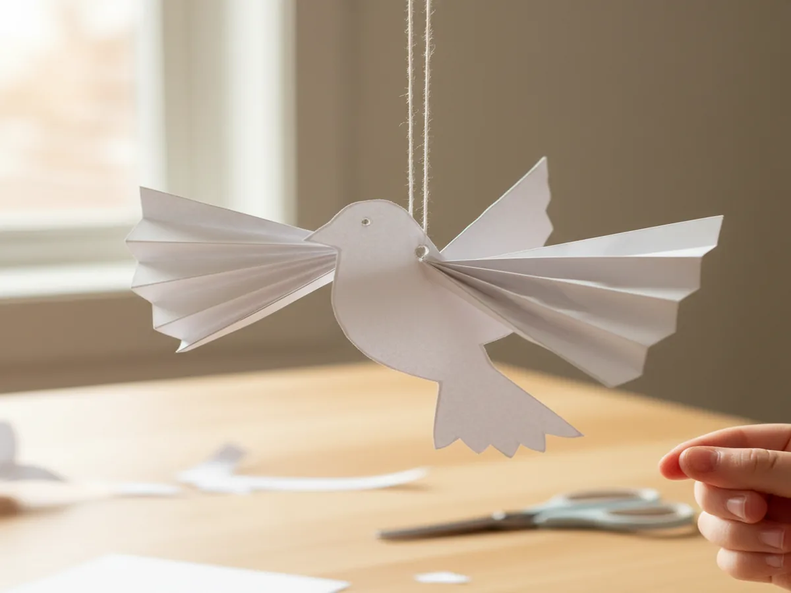
18. Christmas Paper Lantern
Roll a rectangle of red or green paper into a cylinder and secure it with tape. Cut a fringe of strips from a second sheet of contrasting paper and attach it inside the cylinder so the fringe hangs down. Thread a ribbon handle through the top for a festive lantern you can display anywhere indoors.
19. Paper Poinsettia
Cut eight to ten large petal shapes from red paper and a handful of smaller ones from a deeper shade of red. Layer the petals around a center circle of yellow, overlapping them slightly, and glue everything flat onto a cardstock backing. These look stunning displayed on a wall or used as a festive table centerpiece.
See our full paper flower tutorial for more flower craft ideas your kids will love.
20. Christmas Gift Tag Set
Fold small pieces of cardstock in half to create mini cards, punch a hole in the corner, and thread a short piece of twine through. Let kids decorate each tag with stamps, stickers, or their own drawings. A present wrapped with a handmade gift tag is one of the simplest christmas construction paper crafts for toddlers that makes a huge impression on the person receiving it.
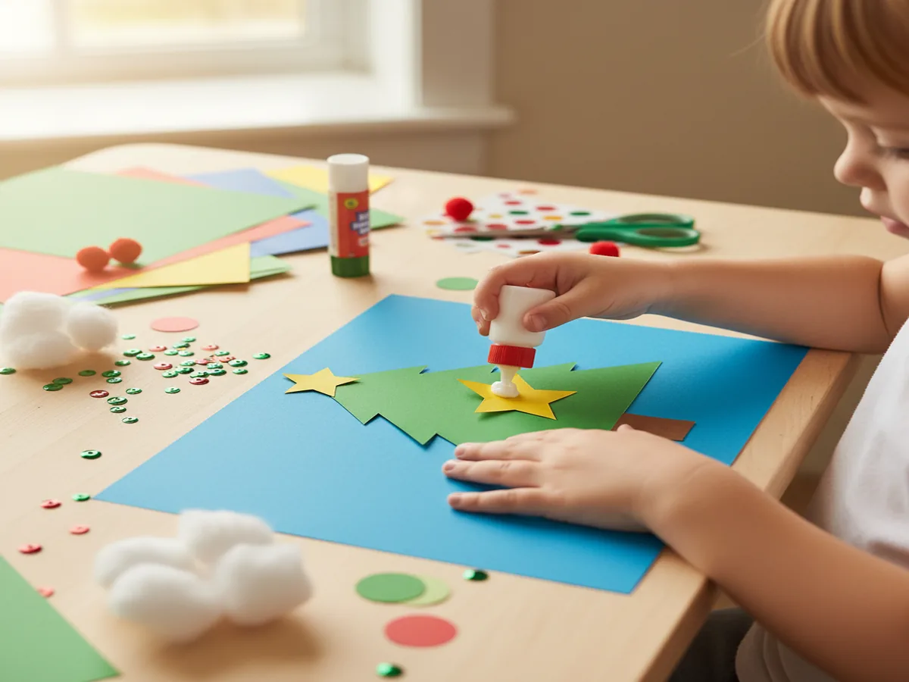
21. Paper Advent Countdown Chain
Write the numbers 1 through 25 on individual paper strips, add a small activity or sweet message on the back of each one, then link them all into a chain. Tear off one link each morning in December for a fun countdown to Christmas. This is one of those easy Christmas paper crafts the whole family ends up looking forward to every single year.
22. Paper Elf
Draw an elf body on green cardstock, add paper shoes with curled toes, a pointy hat, and a cheeky drawn face. Tape the finished elf somewhere unexpected around the house and tell your child the elf got there on his own. This playful idea blends craft time with a little holiday storytelling magic that kids absolutely eat up.
23. Paper Christmas Village
Cut different-sized rectangles for buildings, add triangle roofs, tiny rectangle doors, and square windows in contrasting colors. Arrange the whole village on a table runner and scatter cotton ball snow around the base. Kids can build and rearrange their village all season long, adding new buildings whenever the crafting mood strikes.
24. Accordion Paper Star
Cut five identical strips of paper, fold each one accordion-style, tape the strips end to end in a ring, and press the top and bottom together so they fan out into a beautiful dimensional star. Use gold or silver cardstock for an especially festive effect. These make stunning wall decorations or gift toppers.
More quick and creative paper craft ideas right here.
25. My Christmas Story Book
Fold several sheets of white paper in half inside a cardstock cover and staple along the spine. Let your child fill the pages with their own Christmas drawings, dictated stories, or holiday wishes. Write the year on the cover and it becomes the most personal keepsake of all. These 25 christmas paper craft ideas for little kids are proof that the best holiday memories are made with the simplest supplies.
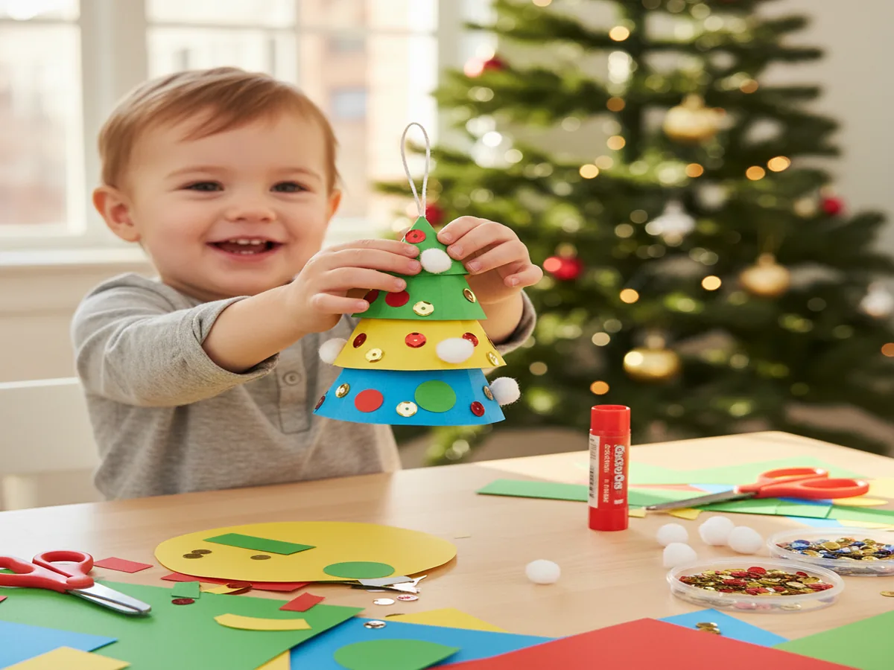
Final Thoughts
These Christmas paper crafts are proof that some of the sweetest holiday moments happen around a kitchen table with a stack of construction paper and a glue stick. Whether you try one idea this week or work your way through the whole list together, we hope it brings a little extra joy and warmth to your December. Happy crafting, friend!
More Crafts You'll Love
If your little ones are on a paper crafting roll, these two are perfect for your next creative afternoon together.
- Gorgeous Paper Flower Craft for Kids - So Easy Even Toddlers Can Make a Beautiful Bouquet!
- 20-Minute Craft Using Paper That Kids Will Beg to Make Again and Again
There you have it: 25 ways to make the holidays a little more magical with nothing more than paper and a pair of willing little hands. Pick one idea, try a few, or work your way through the whole list together this December. Happy crafting!